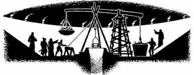

124
In addition to your supplies, Senator Chil provides the winch, ropes, and cradle by which you will be lowered into the shaft that descends to Zaaryx. Upon your arrival at the Square of the Dragons he supervises the assembly of these vital components, while you stand with Senator Zilaris and stare in awe at the Cauldron itself.
{kind=link}

In the glow of a hundred lanterns it takes on the appearance of a huge, steep-sided sink that is stoppered with a plug of stone. The key to this plug is a rod of Korlinium that, until this evening, was kept locked in the vaults of the Anarium. Now it rests in the hands of the President. Senator Chil signals that his work is complete and the President inserts the crystal rod into the plug of ancient stone. At first nothing happens. Then you sense a vibration beneath your feet. Crackling tongues of pale blue fire lap the rim of the plug and the hiss of escaping air breaks the seal of three centuries’ grime that holds the plug in place. Levers and ropes are brought into action and slowly the great block is lifted and the shaft to Zaaryx uncovered.